<!DOCTYPE html>
<html>
<head><meta name="generator" content="Hexo 3.8.0">
  <!-- hexo-inject:begin --><!-- hexo-inject:end --><meta charset="utf-8">
  

  
  <title>空间域滤波实验报告 | DongXuehui&#39;s Blog</title>
  <meta name="viewport" content="width=device-width, initial-scale=1, maximum-scale=1">
  <meta name="description" content="空间域滤波实验报告实验内容: 1.编程实现一幅8比特图像的比特平面分割。  2.思考课后习题3.14、3.17、3.21，并编程验证思路。 实验过程：实验题一  8比特图像比特面分割原理：把数字图像分解成为位平面，高阶位如前4位包含视觉上很重要的大多数数据；其它位对图像中的更多微小细节有作用。  算法：  读入图像，并读出图像行数r和列数c 创建一个r*c*8的三维矩阵 按照比特面从小到大，逐行逐">
<meta name="keywords" content="数字图像处理">
<meta property="og:type" content="article">
<meta property="og:title" content="空间域滤波实验报告">
<meta property="og:url" content="http://dongxh.cn/2020/03/25/空间域滤波器实验报告/index.html">
<meta property="og:site_name" content="DongXuehui&#39;s Blog">
<meta property="og:description" content="空间域滤波实验报告实验内容: 1.编程实现一幅8比特图像的比特平面分割。  2.思考课后习题3.14、3.17、3.21，并编程验证思路。 实验过程：实验题一  8比特图像比特面分割原理：把数字图像分解成为位平面，高阶位如前4位包含视觉上很重要的大多数数据；其它位对图像中的更多微小细节有作用。  算法：  读入图像，并读出图像行数r和列数c 创建一个r*c*8的三维矩阵 按照比特面从小到大，逐行逐">
<meta property="og:locale" content="zh-CN">
<meta property="og:image" content="http://dongxh.cn/2020/03/25/空间域滤波器实验报告/2.png">
<meta property="og:image" content="http://dongxh.cn/2020/03/25/空间域滤波器实验报告/3.png">
<meta property="og:image" content="http://dongxh.cn/2020/03/25/空间域滤波器实验报告/1.png">
<meta property="og:image" content="http://dongxh.cn/2020/03/25/空间域滤波器实验报告/left.jpg">
<meta property="og:image" content="http://dongxh.cn/2020/03/25/空间域滤波器实验报告/right.jpg">
<meta property="og:image" content="http://dongxh.cn/2020/03/25/空间域滤波器实验报告/4.png">
<meta property="og:image" content="http://dongxh.cn/2020/03/25/空间域滤波器实验报告/5.png">
<meta property="og:image" content="http://dongxh.cn/2020/03/25/空间域滤波器实验报告/6.png">
<meta property="og:image" content="http://dongxh.cn/2020/03/25/空间域滤波器实验报告/7.png">
<meta property="og:image" content="http://dongxh.cn/2020/03/25/空间域滤波器实验报告/8.png">
<meta property="og:image" content="http://dongxh.cn/2020/03/25/空间域滤波器实验报告/9.png">
<meta property="og:image" content="http://dongxh.cn/2020/03/25/空间域滤波器实验报告/10.png">
<meta property="og:image" content="http://dongxh.cn/2020/03/25/空间域滤波器实验报告/11.png">
<meta property="og:updated_time" content="2020-04-04T05:00:12.782Z">
<meta name="twitter:card" content="summary">
<meta name="twitter:title" content="空间域滤波实验报告">
<meta name="twitter:description" content="空间域滤波实验报告实验内容: 1.编程实现一幅8比特图像的比特平面分割。  2.思考课后习题3.14、3.17、3.21，并编程验证思路。 实验过程：实验题一  8比特图像比特面分割原理：把数字图像分解成为位平面，高阶位如前4位包含视觉上很重要的大多数数据；其它位对图像中的更多微小细节有作用。  算法：  读入图像，并读出图像行数r和列数c 创建一个r*c*8的三维矩阵 按照比特面从小到大，逐行逐">
<meta name="twitter:image" content="http://dongxh.cn/2020/03/25/空间域滤波器实验报告/2.png">
  
    <link rel="alternate" href="/atom.xml" title="DongXuehui&#39;s Blog" type="application/atom+xml">
  
  
    <link rel="icon" href="/favicon.png">
  
  
    <link href="//fonts.googleapis.com/css?family=Source+Code+Pro" rel="stylesheet" type="text/css">
  
  <link rel="stylesheet" href="/css/style.css"><!-- hexo-inject:begin --><!-- hexo-inject:end -->
</head>
</html>
<body>
  <!-- hexo-inject:begin --><!-- hexo-inject:end --><div id="container">
    <div id="wrap">
      <header id="header">
  <div id="banner"></div>
  <div id="header-outer" class="outer">
    <div id="header-title" class="inner">
      <h1 id="logo-wrap">
        <a href="/" id="logo">DongXuehui&#39;s Blog</a>
      </h1>
      
    </div>
    <div id="header-inner" class="inner">
      <nav id="main-nav">
        <a id="main-nav-toggle" class="nav-icon"></a>
        
          <a class="main-nav-link" href="/">Home</a>
        
          <a class="main-nav-link" href="/archives">Archives</a>
        
      </nav>
      <nav id="sub-nav">
        
          <a id="nav-rss-link" class="nav-icon" href="/atom.xml" title="RSS Feed"></a>
        
        <a id="nav-search-btn" class="nav-icon" title="搜索"></a>
      </nav>
      <div id="search-form-wrap">
        <form action="//google.com/search" method="get" accept-charset="UTF-8" class="search-form"><input type="search" name="q" class="search-form-input" placeholder="Search"><button type="submit" class="search-form-submit">&#xF002;</button><input type="hidden" name="sitesearch" value="http://dongxh.cn"></form>
      </div>
    </div>
  </div>
</header>
      <div class="outer">
        <section id="main"><article id="post-空间域滤波器实验报告" class="article article-type-post" itemscope itemprop="blogPost">
  <div class="article-meta">
    <a href="/2020/03/25/空间域滤波器实验报告/" class="article-date">
  <time datetime="2020-03-25T08:51:24.000Z" itemprop="datePublished">2020-03-25</time>
</a>
    
  <div class="article-category">
    <a class="article-category-link" href="/categories/Digital-Image-Process/">Digital Image Process</a>
  </div>

  </div>
  <div class="article-inner">
    
    
      <header class="article-header">
        
  
    <h1 class="article-title" itemprop="name">
      空间域滤波实验报告
    </h1>
  

      </header>
    
    <div class="article-entry" itemprop="articleBody">
      
        <h1 id="空间域滤波实验报告"><a href="#空间域滤波实验报告" class="headerlink" title="空间域滤波实验报告"></a>空间域滤波实验报告</h1><h3 id="实验内容"><a href="#实验内容" class="headerlink" title="实验内容:"></a>实验内容:</h3><p> 1.编程实现一幅8比特图像的比特平面分割。</p>
<p> 2.思考课后习题3.14、3.17、3.21，并编程验证思路。</p>
<h3 id="实验过程："><a href="#实验过程：" class="headerlink" title="实验过程："></a>实验过程：</h3><h4 id="实验题一-8比特图像比特面分割"><a href="#实验题一-8比特图像比特面分割" class="headerlink" title="实验题一  8比特图像比特面分割"></a>实验题一  8比特图像比特面分割</h4><p>原理：把数字图像分解成为<strong>位平面</strong>，高阶位如前4位包含视觉上很重要的大多数数据；其它位对图像中的更多微小细节有作用。</p>
<p>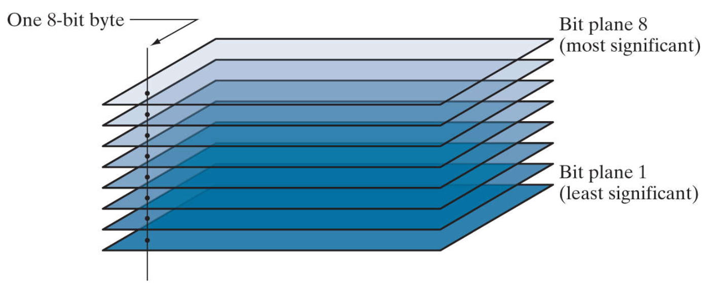</p>
<p>算法：</p>
<ol>
<li>读入图像，并读出图像行数r和列数c</li>
<li>创建一个r*c*8的三维矩阵</li>
<li>按照比特面从小到大，逐行逐列遍历，满足条件$2^{n-1}&lt;p_{ij}\leqslant2^n$的像素点，则将其灰度值赋给第n层比特面相应的位置，不满足的点赋值为0。</li>
</ol>
<p>代码：</p>
<figure class="highlight matlab"><table><tr><td class="gutter"><pre><span class="line">1</span><br><span class="line">2</span><br><span class="line">3</span><br><span class="line">4</span><br><span class="line">5</span><br><span class="line">6</span><br><span class="line">7</span><br><span class="line">8</span><br><span class="line">9</span><br><span class="line">10</span><br><span class="line">11</span><br><span class="line">12</span><br><span class="line">13</span><br><span class="line">14</span><br><span class="line">15</span><br><span class="line">16</span><br><span class="line">17</span><br><span class="line">18</span><br><span class="line">19</span><br><span class="line">20</span><br><span class="line">21</span><br><span class="line">22</span><br><span class="line">23</span><br><span class="line">24</span><br><span class="line">25</span><br><span class="line">26</span><br></pre></td><td class="code"><pre><span class="line">clear;</span><br><span class="line">clc;</span><br><span class="line">f = imread(<span class="string">'aaa.tif'</span>);</span><br><span class="line"><span class="comment">%f = rgb2gray(f);</span></span><br><span class="line">[r,c] = <span class="built_in">size</span>(f);</span><br><span class="line">f1 = double(f)./<span class="number">256</span>;</span><br><span class="line">subplot(<span class="number">3</span>,<span class="number">3</span>,<span class="number">1</span>);</span><br><span class="line">imshow(f1,[]);</span><br><span class="line">title(<span class="string">'原图'</span>);</span><br><span class="line">bitImage = <span class="built_in">zeros</span>(r,c,<span class="number">8</span>);</span><br><span class="line"><span class="keyword">for</span> n = <span class="number">1</span>:<span class="number">8</span></span><br><span class="line">    <span class="keyword">for</span> ri =<span class="number">1</span>:r</span><br><span class="line">        <span class="keyword">for</span> ci = <span class="number">1</span>:c</span><br><span class="line">            <span class="comment">%temp = f(ri,ci);</span></span><br><span class="line">            <span class="keyword">if</span>(f(ri,ci)&gt;<span class="number">2</span>^(n<span class="number">-1</span>) &amp;&amp; f(ri,ci)&lt;=<span class="number">2</span>^n)</span><br><span class="line">                bitImage(ri,ci,n)=f1(ri,ci);</span><br><span class="line">            <span class="keyword">else</span></span><br><span class="line">                bitImage(ri,ci,n)=<span class="number">0</span>;</span><br><span class="line">            <span class="keyword">end</span></span><br><span class="line">        <span class="keyword">end</span></span><br><span class="line">    <span class="keyword">end</span></span><br><span class="line">    subplot(<span class="number">3</span>,<span class="number">3</span>,n+<span class="number">1</span>);</span><br><span class="line">    imshow(bitImage(:,:,n),[]);</span><br><span class="line">    titlename = strcat(<span class="string">'第'</span>,num2str(n),<span class="string">'比特面'</span>);</span><br><span class="line">    title(titlename);</span><br><span class="line"><span class="keyword">end</span></span><br></pre></td></tr></table></figure>
<p>实验结果：</p>
<p>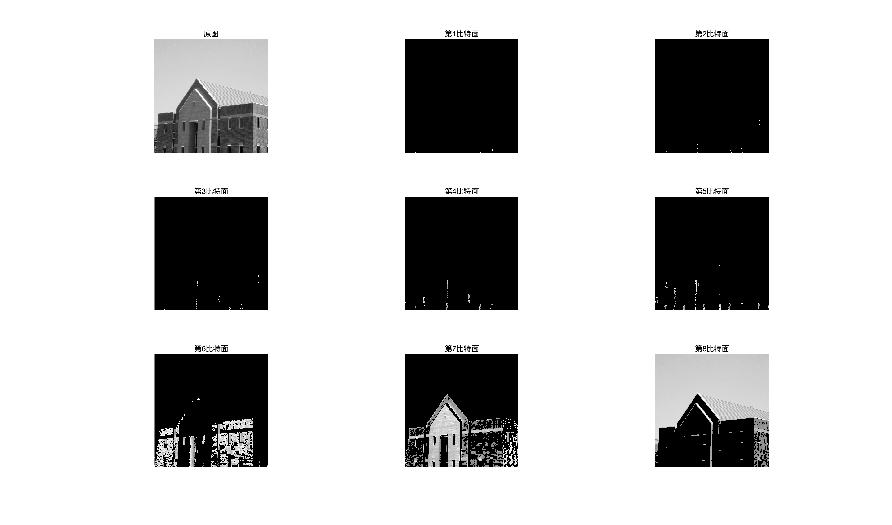</p>
<h4 id="实验题二"><a href="#实验题二" class="headerlink" title="实验题二"></a>实验题二</h4><p>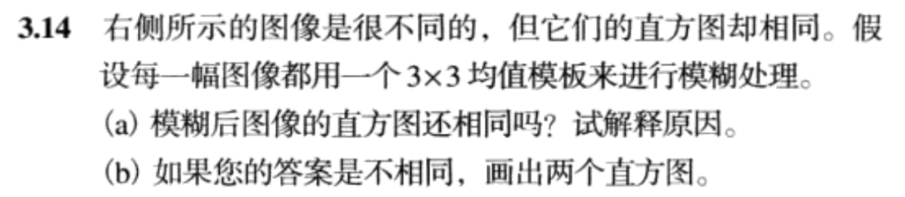  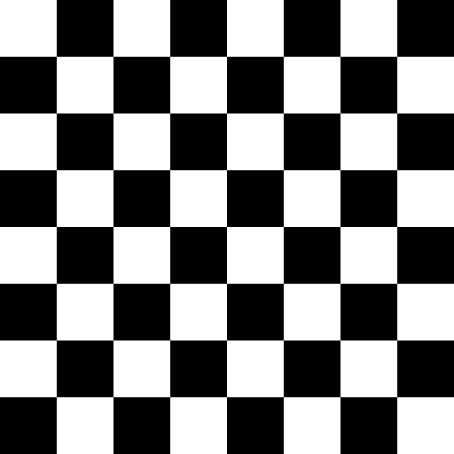 </p>
<p>代码：</p>
<figure class="highlight matlab"><table><tr><td class="gutter"><pre><span class="line">1</span><br><span class="line">2</span><br><span class="line">3</span><br><span class="line">4</span><br><span class="line">5</span><br><span class="line">6</span><br><span class="line">7</span><br><span class="line">8</span><br><span class="line">9</span><br><span class="line">10</span><br><span class="line">11</span><br><span class="line">12</span><br><span class="line">13</span><br><span class="line">14</span><br><span class="line">15</span><br><span class="line">16</span><br><span class="line">17</span><br><span class="line">18</span><br><span class="line">19</span><br></pre></td><td class="code"><pre><span class="line">clc;</span><br><span class="line">clear;</span><br><span class="line">left = imread(<span class="string">'left.jpg'</span>);</span><br><span class="line">right = imread(<span class="string">'right.jpg'</span>);</span><br><span class="line">w3 = fspecial(<span class="string">'average'</span>,[<span class="number">3</span> <span class="number">3</span>]); <span class="comment">%掩模模版--3x3的均值滤波</span></span><br><span class="line">left2 = imfilter(left, w3, <span class="string">'conv'</span>, <span class="string">'circular'</span>, <span class="string">'same'</span>);</span><br><span class="line">right2 = imfilter(right, w3, <span class="string">'conv'</span>, <span class="string">'circular'</span>, <span class="string">'same'</span>);</span><br><span class="line">subplot(<span class="number">3</span>,<span class="number">2</span>,<span class="number">1</span>);</span><br><span class="line">imshow(left);</span><br><span class="line">subplot(<span class="number">3</span>,<span class="number">2</span>,<span class="number">2</span>);</span><br><span class="line">imshow(right);</span><br><span class="line">subplot(<span class="number">3</span>,<span class="number">2</span>,<span class="number">3</span>);</span><br><span class="line">imshow(left2);</span><br><span class="line">subplot(<span class="number">3</span>,<span class="number">2</span>,<span class="number">4</span>);</span><br><span class="line">imshow(right2);</span><br><span class="line">subplot(<span class="number">3</span>,<span class="number">2</span>,<span class="number">5</span>);</span><br><span class="line">stairs(imhist(left2, <span class="number">256</span>)/<span class="built_in">numel</span>(left2));</span><br><span class="line">subplot(<span class="number">3</span>,<span class="number">2</span>,<span class="number">6</span>);</span><br><span class="line">stairs(imhist(right2, <span class="number">256</span>)/<span class="built_in">numel</span>(right2));</span><br></pre></td></tr></table></figure>
<p></p>
<p>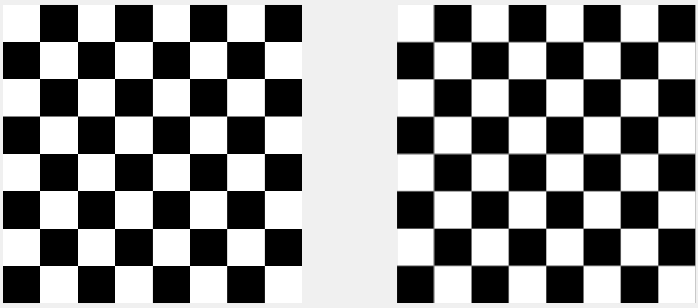</p>
<p>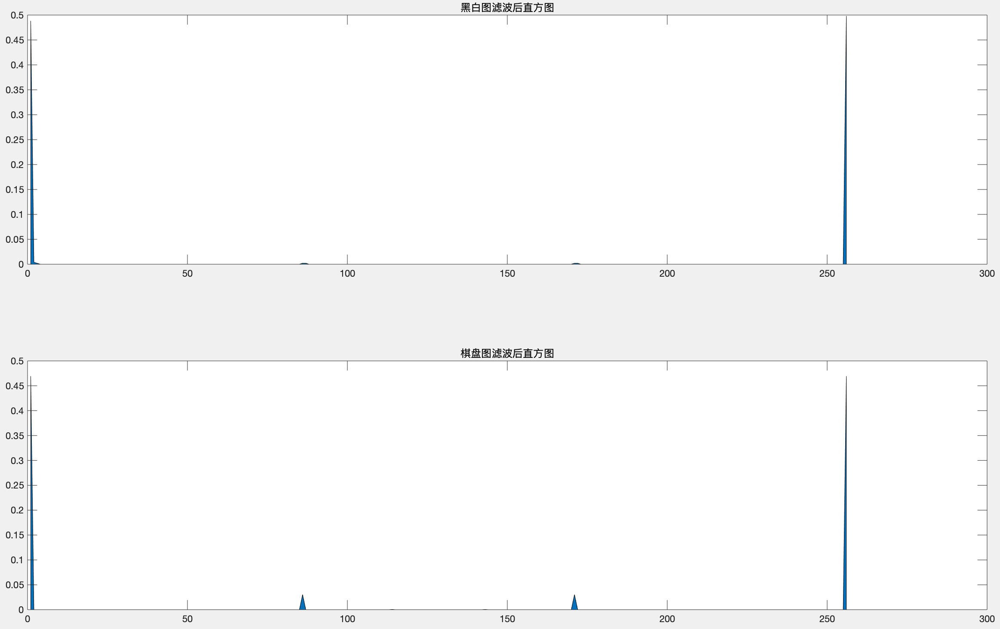</p>
<h4 id="实验题三"><a href="#实验题三" class="headerlink" title="实验题三"></a>实验题三</h4><p>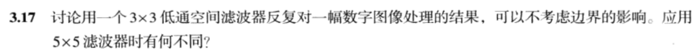</p>
<p>代码：</p>
<figure class="highlight matlab"><table><tr><td class="gutter"><pre><span class="line">1</span><br><span class="line">2</span><br><span class="line">3</span><br><span class="line">4</span><br><span class="line">5</span><br><span class="line">6</span><br><span class="line">7</span><br><span class="line">8</span><br><span class="line">9</span><br><span class="line">10</span><br><span class="line">11</span><br><span class="line">12</span><br><span class="line">13</span><br><span class="line">14</span><br><span class="line">15</span><br><span class="line">16</span><br><span class="line">17</span><br><span class="line">18</span><br><span class="line">19</span><br><span class="line">20</span><br><span class="line">21</span><br><span class="line">22</span><br><span class="line">23</span><br><span class="line">24</span><br></pre></td><td class="code"><pre><span class="line">clc;</span><br><span class="line">clear;</span><br><span class="line">f = imread(<span class="string">'aaa.tif'</span>);</span><br><span class="line">f3 = f;</span><br><span class="line">f5 = f;</span><br><span class="line">w3 = fspecial(<span class="string">'gaussian'</span>,[<span class="number">3</span> <span class="number">3</span>]);</span><br><span class="line">w5 = fspecial(<span class="string">'gaussian'</span>,[<span class="number">5</span> <span class="number">5</span>]);</span><br><span class="line">n = <span class="number">16</span>;</span><br><span class="line"><span class="keyword">for</span> <span class="built_in">i</span> = <span class="number">1</span>:n</span><br><span class="line">    f3 = imfilter(f3, w3, <span class="string">'conv'</span>, <span class="string">'circular'</span>, <span class="string">'same'</span>);</span><br><span class="line"><span class="keyword">end</span></span><br><span class="line"></span><br><span class="line"><span class="keyword">for</span> <span class="built_in">i</span> = <span class="number">1</span>:n</span><br><span class="line">    f5 = imfilter(f5, w3, <span class="string">'conv'</span>, <span class="string">'circular'</span>, <span class="string">'same'</span>);</span><br><span class="line"><span class="keyword">end</span></span><br><span class="line">subplot(<span class="number">1</span>,<span class="number">3</span>,<span class="number">1</span>);</span><br><span class="line">imshow(f);</span><br><span class="line">title(<span class="string">'原图'</span>);</span><br><span class="line">subplot(<span class="number">1</span>,<span class="number">3</span>,<span class="number">2</span>);</span><br><span class="line">imshow(f3);</span><br><span class="line">title(<span class="string">'3x3高斯低通16次循环'</span>);</span><br><span class="line">subplot(<span class="number">1</span>,<span class="number">3</span>,<span class="number">3</span>);</span><br><span class="line">imshow(f5);</span><br><span class="line">title(<span class="string">'5x5高斯低通16次循环'</span>);</span><br></pre></td></tr></table></figure>
<p>结果：</p>
<p>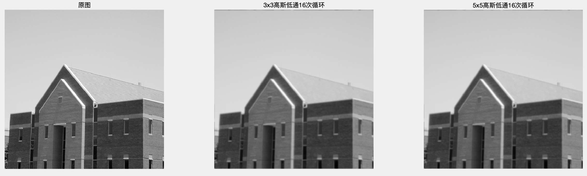</p>
<h4 id="实验题四"><a href="#实验题四" class="headerlink" title="实验题四"></a>实验题四</h4><p>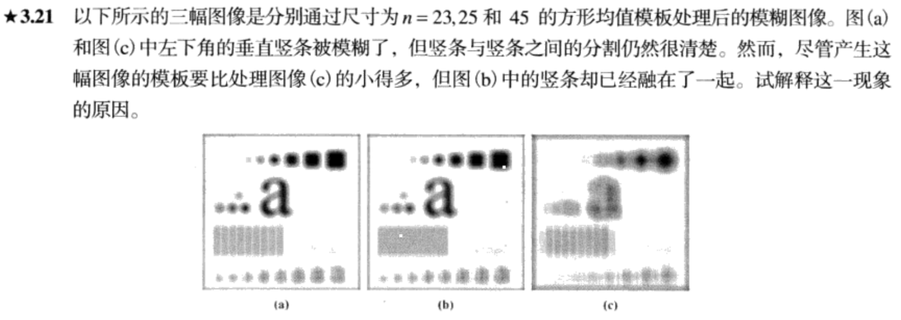</p>
<p>分析过程：</p>
<p>我们所分析的现象显然与条形图像的水平间隔有关。因此我们可以考虑垂直于条形图的一条扫描线来简化问题。</p>
<p>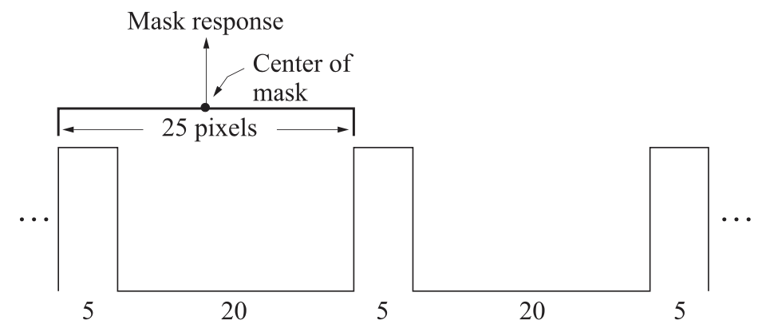</p>
<p>如图所示，我们假设每条的宽度为5，间隔为20。当掩模的宽度恰好为20+5=25时，不论掩模在水平方向上如何移动，水平范围内，一定包含了相等数量的‘黑像素点’，由于时均值模型，所以不论掩模空间位置在何处，掩模中心的值都是相等的，为5/25=0.2。所以条形区内是模糊的，无法辨认。当掩模的宽度不是25的整数倍时，滤波后，仍然会显出条形特征。</p>
<p>验证过程：</p>
<ol>
<li>创建一个有特定值的条形图片（每条宽度10，间隔20）</li>
<li>分别用15x15，30x30，50x50的均值滤波器来处理图像</li>
<li>观察结果</li>
</ol>
<p>代码：</p>
<figure class="highlight matlab"><table><tr><td class="gutter"><pre><span class="line">1</span><br><span class="line">2</span><br><span class="line">3</span><br><span class="line">4</span><br><span class="line">5</span><br><span class="line">6</span><br><span class="line">7</span><br><span class="line">8</span><br><span class="line">9</span><br><span class="line">10</span><br><span class="line">11</span><br><span class="line">12</span><br><span class="line">13</span><br><span class="line">14</span><br><span class="line">15</span><br><span class="line">16</span><br><span class="line">17</span><br><span class="line">18</span><br><span class="line">19</span><br><span class="line">20</span><br><span class="line">21</span><br><span class="line">22</span><br><span class="line">23</span><br><span class="line">24</span><br><span class="line">25</span><br></pre></td><td class="code"><pre><span class="line">clc;</span><br><span class="line">clear;</span><br><span class="line">A = [<span class="number">0</span> <span class="number">0</span> <span class="number">0</span> <span class="number">0</span> <span class="number">0</span> <span class="number">0</span> <span class="number">0</span> <span class="number">0</span> <span class="number">0</span> <span class="number">0</span> <span class="number">1</span> <span class="number">1</span> <span class="number">1</span> <span class="number">1</span> <span class="number">1</span> <span class="number">1</span> <span class="number">1</span> <span class="number">1</span> <span class="number">1</span> <span class="number">1</span> <span class="number">1</span> <span class="number">1</span> <span class="number">1</span> <span class="number">1</span> <span class="number">1</span> <span class="number">1</span> <span class="number">1</span> <span class="number">1</span> <span class="number">1</span> <span class="number">1</span>;<span class="number">0</span> <span class="number">0</span> <span class="number">0</span> <span class="number">0</span> <span class="number">0</span> <span class="number">0</span> <span class="number">0</span> <span class="number">0</span> <span class="number">0</span> <span class="number">0</span> <span class="number">1</span> <span class="number">1</span> <span class="number">1</span> <span class="number">1</span> <span class="number">1</span> <span class="number">1</span> <span class="number">1</span> <span class="number">1</span> <span class="number">1</span> <span class="number">1</span> <span class="number">1</span> <span class="number">1</span> <span class="number">1</span> <span class="number">1</span> <span class="number">1</span> <span class="number">1</span> <span class="number">1</span> <span class="number">1</span> <span class="number">1</span> <span class="number">1</span>;<span class="number">0</span> <span class="number">0</span> <span class="number">0</span> <span class="number">0</span> <span class="number">0</span> <span class="number">0</span> <span class="number">0</span> <span class="number">0</span> <span class="number">0</span> <span class="number">0</span> <span class="number">1</span> <span class="number">1</span> <span class="number">1</span> <span class="number">1</span> <span class="number">1</span> <span class="number">1</span> <span class="number">1</span> <span class="number">1</span> <span class="number">1</span> <span class="number">1</span> <span class="number">1</span> <span class="number">1</span> <span class="number">1</span> <span class="number">1</span> <span class="number">1</span> <span class="number">1</span> <span class="number">1</span> <span class="number">1</span> <span class="number">1</span> <span class="number">1</span>;<span class="number">0</span> <span class="number">0</span> <span class="number">0</span> <span class="number">0</span> <span class="number">0</span> <span class="number">0</span> <span class="number">0</span> <span class="number">0</span> <span class="number">0</span> <span class="number">0</span> <span class="number">1</span> <span class="number">1</span> <span class="number">1</span> <span class="number">1</span> <span class="number">1</span> <span class="number">1</span> <span class="number">1</span> <span class="number">1</span> <span class="number">1</span> <span class="number">1</span> <span class="number">1</span> <span class="number">1</span> <span class="number">1</span> <span class="number">1</span> <span class="number">1</span> <span class="number">1</span> <span class="number">1</span> <span class="number">1</span> <span class="number">1</span> <span class="number">1</span>;<span class="number">0</span> <span class="number">0</span> <span class="number">0</span> <span class="number">0</span> <span class="number">0</span> <span class="number">0</span> <span class="number">0</span> <span class="number">0</span> <span class="number">0</span> <span class="number">0</span> <span class="number">1</span> <span class="number">1</span> <span class="number">1</span> <span class="number">1</span> <span class="number">1</span> <span class="number">1</span> <span class="number">1</span> <span class="number">1</span> <span class="number">1</span> <span class="number">1</span> <span class="number">1</span> <span class="number">1</span> <span class="number">1</span> <span class="number">1</span> <span class="number">1</span> <span class="number">1</span> <span class="number">1</span> <span class="number">1</span> <span class="number">1</span> <span class="number">1</span>;<span class="number">0</span> <span class="number">0</span> <span class="number">0</span> <span class="number">0</span> <span class="number">0</span> <span class="number">0</span> <span class="number">0</span> <span class="number">0</span> <span class="number">0</span> <span class="number">0</span> <span class="number">1</span> <span class="number">1</span> <span class="number">1</span> <span class="number">1</span> <span class="number">1</span> <span class="number">1</span> <span class="number">1</span> <span class="number">1</span> <span class="number">1</span> <span class="number">1</span> <span class="number">1</span> <span class="number">1</span> <span class="number">1</span> <span class="number">1</span> <span class="number">1</span> <span class="number">1</span> <span class="number">1</span> <span class="number">1</span> <span class="number">1</span> <span class="number">1</span>;<span class="number">0</span> <span class="number">0</span> <span class="number">0</span> <span class="number">0</span> <span class="number">0</span> <span class="number">0</span> <span class="number">0</span> <span class="number">0</span> <span class="number">0</span> <span class="number">0</span> <span class="number">1</span> <span class="number">1</span> <span class="number">1</span> <span class="number">1</span> <span class="number">1</span> <span class="number">1</span> <span class="number">1</span> <span class="number">1</span> <span class="number">1</span> <span class="number">1</span> <span class="number">1</span> <span class="number">1</span> <span class="number">1</span> <span class="number">1</span> <span class="number">1</span> <span class="number">1</span> <span class="number">1</span> <span class="number">1</span> <span class="number">1</span> <span class="number">1</span>;<span class="number">0</span> <span class="number">0</span> <span class="number">0</span> <span class="number">0</span> <span class="number">0</span> <span class="number">0</span> <span class="number">0</span> <span class="number">0</span> <span class="number">0</span> <span class="number">0</span> <span class="number">1</span> <span class="number">1</span> <span class="number">1</span> <span class="number">1</span> <span class="number">1</span> <span class="number">1</span> <span class="number">1</span> <span class="number">1</span> <span class="number">1</span> <span class="number">1</span> <span class="number">1</span> <span class="number">1</span> <span class="number">1</span> <span class="number">1</span> <span class="number">1</span> <span class="number">1</span> <span class="number">1</span> <span class="number">1</span> <span class="number">1</span> <span class="number">1</span>;<span class="number">0</span> <span class="number">0</span> <span class="number">0</span> <span class="number">0</span> <span class="number">0</span> <span class="number">0</span> <span class="number">0</span> <span class="number">0</span> <span class="number">0</span> <span class="number">0</span> <span class="number">1</span> <span class="number">1</span> <span class="number">1</span> <span class="number">1</span> <span class="number">1</span> <span class="number">1</span> <span class="number">1</span> <span class="number">1</span> <span class="number">1</span> <span class="number">1</span> <span class="number">1</span> <span class="number">1</span> <span class="number">1</span> <span class="number">1</span> <span class="number">1</span> <span class="number">1</span> <span class="number">1</span> <span class="number">1</span> <span class="number">1</span> <span class="number">1</span>;<span class="number">0</span> <span class="number">0</span> <span class="number">0</span> <span class="number">0</span> <span class="number">0</span> <span class="number">0</span> <span class="number">0</span> <span class="number">0</span> <span class="number">0</span> <span class="number">0</span> <span class="number">1</span> <span class="number">1</span> <span class="number">1</span> <span class="number">1</span> <span class="number">1</span> <span class="number">1</span> <span class="number">1</span> <span class="number">1</span> <span class="number">1</span> <span class="number">1</span> <span class="number">1</span> <span class="number">1</span> <span class="number">1</span> <span class="number">1</span> <span class="number">1</span> <span class="number">1</span> <span class="number">1</span> <span class="number">1</span> <span class="number">1</span> <span class="number">1</span>;]</span><br><span class="line">A = <span class="built_in">repmat</span>(A,<span class="number">100</span>,<span class="number">40</span>);</span><br><span class="line">w15 = fspecial(<span class="string">'average'</span>,[<span class="number">15</span> <span class="number">15</span>]);</span><br><span class="line">w30 = fspecial(<span class="string">'average'</span>,[<span class="number">30</span> <span class="number">30</span>]);</span><br><span class="line">w50 = fspecial(<span class="string">'average'</span>,[<span class="number">50</span> <span class="number">50</span>]);</span><br><span class="line">A15 = imfilter(A, w15, <span class="string">'conv'</span>, <span class="string">'circular'</span>, <span class="string">'same'</span>);</span><br><span class="line">A30 = imfilter(A, w30, <span class="string">'conv'</span>, <span class="string">'circular'</span>, <span class="string">'same'</span>);</span><br><span class="line">A50 = imfilter(A, w50, <span class="string">'conv'</span>, <span class="string">'circular'</span>, <span class="string">'same'</span>);</span><br><span class="line">subplot(<span class="number">2</span>,<span class="number">2</span>,<span class="number">1</span>);</span><br><span class="line">imshow(A);</span><br><span class="line">title(<span class="string">'原图'</span>);</span><br><span class="line"><span class="comment">%</span></span><br><span class="line">subplot(<span class="number">2</span>,<span class="number">2</span>,<span class="number">2</span>);</span><br><span class="line">imshow(A15);</span><br><span class="line">title(<span class="string">'15x15'</span>);</span><br><span class="line"><span class="comment">%</span></span><br><span class="line">subplot(<span class="number">2</span>,<span class="number">2</span>,<span class="number">3</span>);</span><br><span class="line">imshow(A30);</span><br><span class="line">title(<span class="string">'30x30'</span>);</span><br><span class="line"><span class="comment">%</span></span><br><span class="line">subplot(<span class="number">2</span>,<span class="number">2</span>,<span class="number">4</span>);</span><br><span class="line">imshow(A50);</span><br><span class="line">title(<span class="string">'50x50'</span>);</span><br></pre></td></tr></table></figure>
<p>结果：</p>
<p>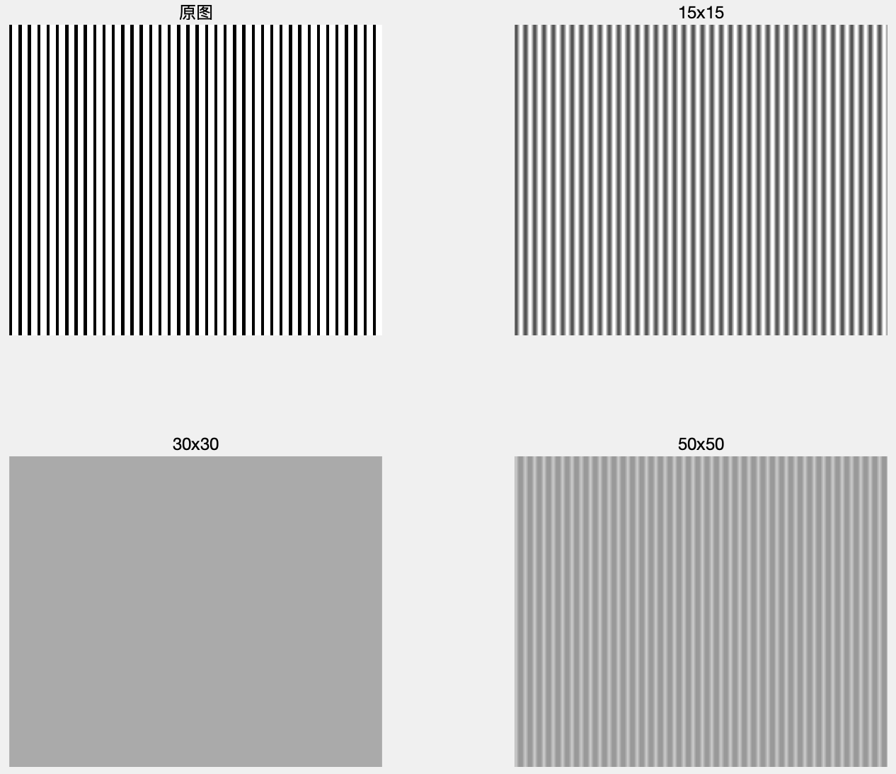</p>

      
    </div>
    <footer class="article-footer">
      <a data-url="http://dongxh.cn/2020/03/25/空间域滤波器实验报告/" data-id="ck8l56qh6000atmlk0hm3ne19" class="article-share-link">Share</a>
      
      
  <ul class="article-tag-list"><li class="article-tag-list-item"><a class="article-tag-list-link" href="/tags/数字图像处理/">数字图像处理</a></li></ul>

    </footer>
  </div>
  
    
<nav id="article-nav">
  
    <a href="/2020/03/26/频域滤波实验报告/" id="article-nav-newer" class="article-nav-link-wrap">
      <strong class="article-nav-caption">Newer</strong>
      <div class="article-nav-title">
        
          频域滤波实验报告
        
      </div>
    </a>
  
  
    <a href="/2020/03/24/图像复原/" id="article-nav-older" class="article-nav-link-wrap">
      <strong class="article-nav-caption">Older</strong>
      <div class="article-nav-title">图像复原</div>
    </a>
  
</nav>

  
</article>

</section>
        
          <aside id="sidebar">
  
    
  <div class="widget-wrap">
    <h3 class="widget-title">分类</h3>
    <div class="widget">
      <ul class="category-list"><li class="category-list-item"><a class="category-list-link" href="/categories/Digital-Image-Process/">Digital Image Process</a></li><li class="category-list-item"><a class="category-list-link" href="/categories/Linux/">Linux</a></li><li class="category-list-item"><a class="category-list-link" href="/categories/Operating-System/">Operating System</a></li><li class="category-list-item"><a class="category-list-link" href="/categories/linear-algebra/">linear algebra</a></li></ul>
    </div>
  </div>


  
    
  <div class="widget-wrap">
    <h3 class="widget-title">标签</h3>
    <div class="widget">
      <ul class="tag-list"><li class="tag-list-item"><a class="tag-list-link" href="/tags/linear-algebra/">linear algebra</a></li><li class="tag-list-item"><a class="tag-list-link" href="/tags/linux/">linux</a></li><li class="tag-list-item"><a class="tag-list-link" href="/tags/操作系统/">操作系统</a></li><li class="tag-list-item"><a class="tag-list-link" href="/tags/数字图像处理/">数字图像处理</a></li></ul>
    </div>
  </div>


  
    
  <div class="widget-wrap">
    <h3 class="widget-title">标签云</h3>
    <div class="widget tagcloud">
      <a href="/tags/linear-algebra/" style="font-size: 10px;">linear algebra</a> <a href="/tags/linux/" style="font-size: 13.33px;">linux</a> <a href="/tags/操作系统/" style="font-size: 16.67px;">操作系统</a> <a href="/tags/数字图像处理/" style="font-size: 20px;">数字图像处理</a>
    </div>
  </div>

  
    
  <div class="widget-wrap">
    <h3 class="widget-title">归档</h3>
    <div class="widget">
      <ul class="archive-list"><li class="archive-list-item"><a class="archive-list-link" href="/archives/2020/04/">四月 2020</a></li><li class="archive-list-item"><a class="archive-list-link" href="/archives/2020/03/">三月 2020</a></li><li class="archive-list-item"><a class="archive-list-link" href="/archives/2019/08/">八月 2019</a></li><li class="archive-list-item"><a class="archive-list-link" href="/archives/2019/03/">三月 2019</a></li></ul>
    </div>
  </div>


  
    
  <div class="widget-wrap">
    <h3 class="widget-title">最新文章</h3>
    <div class="widget">
      <ul>
        
          <li>
            <a href="/2020/04/03/OS-处理器管理（4）-线程及其实现/">OS--处理器管理（4）_线程及其实现</a>
          </li>
        
          <li>
            <a href="/2020/04/02/OS-处理器管理（3）-进程及其实现/">OS--处理器管理（3）_进程及其实现</a>
          </li>
        
          <li>
            <a href="/2020/03/30/OS-处理器管理（1）-中断技术/">OS--处理器管理（2）_中断技术</a>
          </li>
        
          <li>
            <a href="/2020/03/28/OS-处理器管理（1）-处理器状态/">OS--处理器管理（1）_处理器状态</a>
          </li>
        
          <li>
            <a href="/2020/03/27/OS-操作系统概论/">OS--操作系统概论</a>
          </li>
        
      </ul>
    </div>
  </div>

  
</aside>
        
      </div>
      <footer id="footer">
  
  <div class="outer">
    <div id="footer-info" class="inner">
      &copy; 2020 dwyane_dongxh<br>
      Powered by <a href="http://hexo.io/" target="_blank">Hexo</a>
    </div>
  </div>
</footer>
    </div>
    <nav id="mobile-nav">
  
    <a href="/" class="mobile-nav-link">Home</a>
  
    <a href="/archives" class="mobile-nav-link">Archives</a>
  
</nav>
    

<script src="//ajax.googleapis.com/ajax/libs/jquery/2.0.3/jquery.min.js"></script>


  <link rel="stylesheet" href="/fancybox/jquery.fancybox.css">
  <script src="/fancybox/jquery.fancybox.pack.js"></script>


<script src="/js/script.js"></script>


  </div><!-- hexo-inject:begin --><!-- Begin: Injected MathJax -->
<script type="text/x-mathjax-config">
  MathJax.Hub.Config({"tex2jax":{"inlineMath":[["$","$"],["\\(","\\)"]],"skipTags":["script","noscript","style","textarea","pre","code"],"processEscapes":true},"TeX":{"equationNumbers":{"autoNumber":"AMS"}}});
</script>

<script type="text/x-mathjax-config">
  MathJax.Hub.Queue(function() {
    var all = MathJax.Hub.getAllJax(), i;
    for(i=0; i < all.length; i += 1) {
      all[i].SourceElement().parentNode.className += ' has-jax';
    }
  });
</script>

<script type="text/javascript" src="https://cdnjs.cloudflare.com/ajax/libs/mathjax/2.7.1/MathJax.js">
</script>
<!-- End: Injected MathJax -->
<!-- hexo-inject:end -->
</body>
</html>